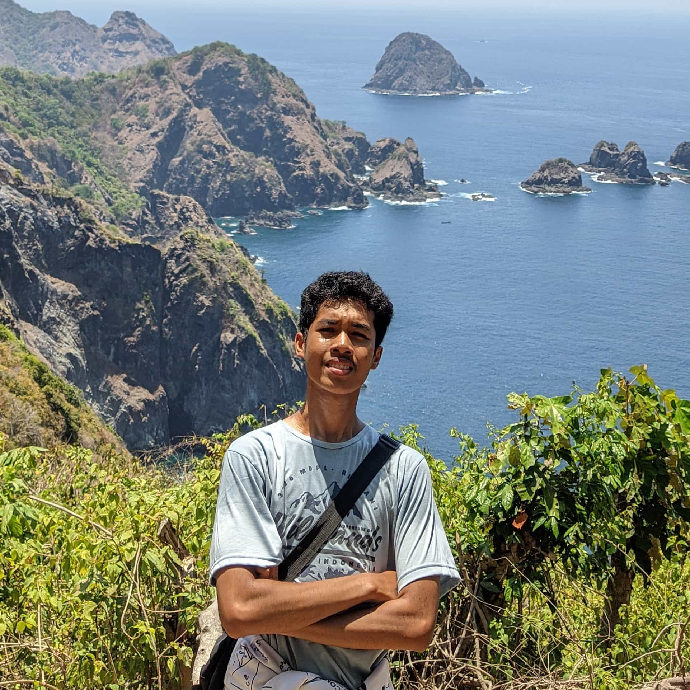

Andhika Yuridho
XI SAINTEK 5
LALU LINTAS
Keterangan Karya:
- Dibuat Pada Tanggal 20 April 2024
- Tema: Lalu Lintas
- Ukuran Bingkai: 10 Cm
- Media: Watercolor On Paper
Di atas kanvas, terlukis pemandangan jalanan yang lengang. Tiada suara klakson yang mengganggu, hanya desiran angin dan kicauan burung yang menemani. Kendaraan-kendaraan melaju dengan santai, tanpa rasa terburu-buru.
Lukisan ini mencerminkan suasana kota yang tenang dan damai. Di sini, manusia dan alam hidup berdampingan dengan harmonis. Lukisan ini mengajak kita untuk merenungkan makna ketenangan dan pentingnya menjaga keseimbangan alam.